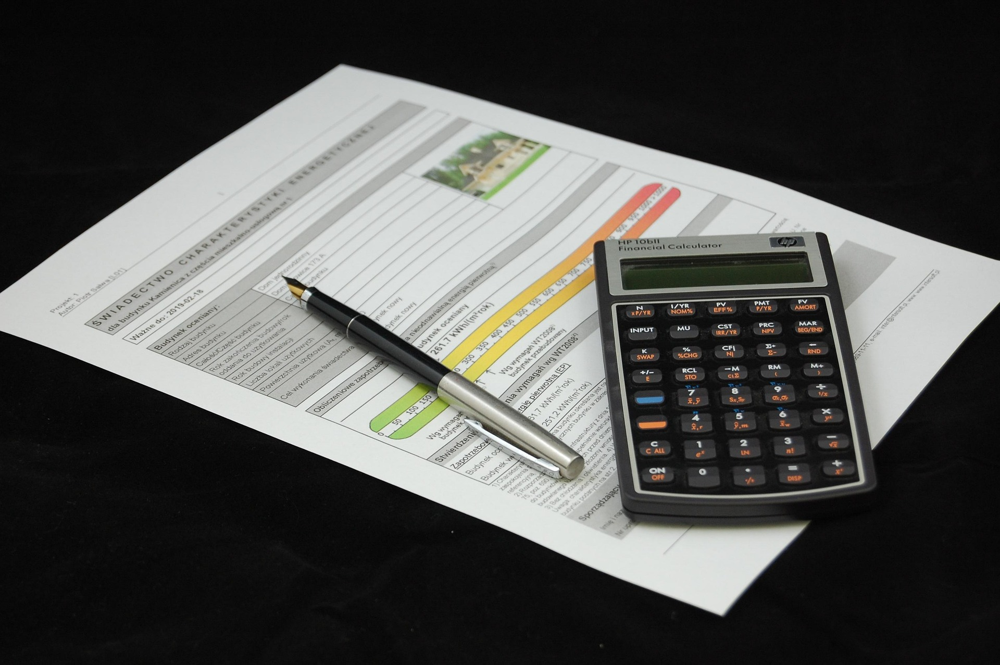
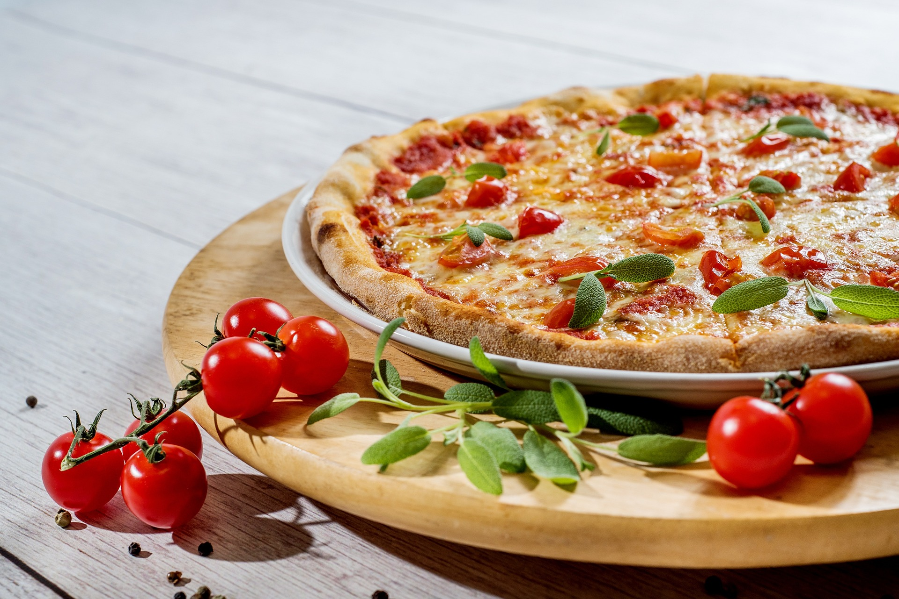

AI Website Creator嗨！我是范珮娸。
我是一個喜歡旅遊、美食，也喜歡接觸不同文化的人。比起一直待在熟悉的地方，我更喜歡到不同的國家走走看看，體驗當地的生活和文化。
平常我也喜歡和家人一起旅行，對我來說旅行不只是去景點拍照，更重要的是和家人一起留下回憶，也能在旅途中發現很多平常接觸不到的新事物。

BMCB 商業管理基礎知能證照
透過 BMCB 商業管理基礎知能證照的學習，我接觸到商業與管理相關的基礎知識，也讓我對企業經營及商業管理有更多了解。
JLPT 日本語能力試驗 N3
我曾經學習日文並通過 JLPT N3。學習日文的過程中，除了累積單字、文法和閱讀能力之外，也讓我更有機會接觸日本的文化。
設計思考與實踐報告
在設計思考與實踐的課程中，我學習從問題出發，思考使用者真正需要的是什麼，再一步一步整理想法、提出解決方式。
這份報告讓我發現，設計不只是把東西做得好看，而是要先了解問題，再想出真正適合的做法。
旅運報告
透過旅運相關報告，我學習整理旅遊資訊、行程與交通等內容，也讓我對旅遊規劃有更進一步的認識。

我很喜歡吃美食，其中我特別喜歡義式料理，平常也很喜歡和家人一起找不同的餐廳。
在台灣，我很喜歡 8德司創意餐館（一中店）。除了台灣的餐廳之外，每次出國我也很期待吃到當地才有的料理。
我曾經在新加坡吃過肉骨茶，也逛過樟宜機場。不過到目前為止，讓我印象最深刻的一餐是在菲律賓宿霧。
當時我們找到一家比較不像觀光客熱門店家的當地餐廳，其中有一道蝦子料理讓我到現在都還記得。蝦子搭配店家的醬料，再配上烤吐司一起吃，意外地超級搭！雖然我到現在還是不知道那個醬到底是什麼😂，但它真的是我旅行到現在吃過最好吃、也最難忘的一道美食。
對我來說，那家店就像旅行途中意外發現的「隱藏版美食」。
我很喜歡和家人一起旅行，目前曾經去過：
🇯🇵 日本｜東京、大阪
🇭🇰 香港
🇸🇬 新加坡
🇵🇭 菲律賓｜宿霧
🇻🇳 越南｜富國島
旅行是我很喜歡的一件事，因為每個地方都有不同的文化、美食和生活方式。
比起自己一個人旅行，我更喜歡和家人一起出國。一起排行程、找餐廳、到不同的地方走走，有時候也會遇到一些原本完全沒計畫到的小驚喜。
我覺得旅行最有趣的地方，就是你永遠不知道下一站會遇到什麼，而這些一起經歷過的事情，也會變成很珍貴的回憶。
AI Website Creator